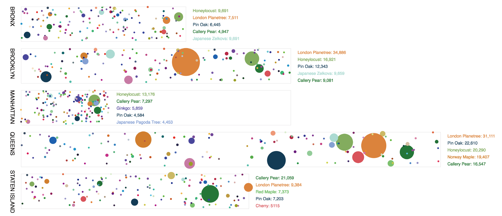
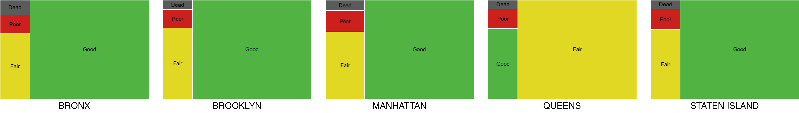
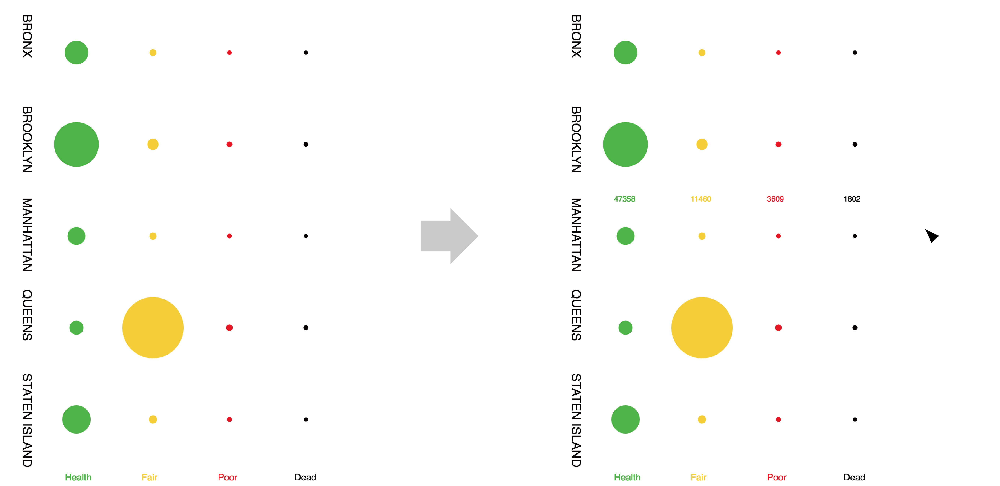

Starting in April of 2007 as a joint venture between the city's Department of Parks and Recreation (DPR), private organizations, residents, and community organizations, it took almost 10 years to increase New York City's urban tree population by an astounding 20%. As a result, we can enjoy the continuous the greenery and tree shades along the sidewalks throughout New York City. The plentiful and diverse street trees provide numerous environment, economic, and special benefit for all.
This project looks into diversity, health status and change of street trees in New York City in 2005 and 2015, and explores both visualization ideas of abstract pixels and maps. The data is based on Tree Census for 2005 and 2015 provided by DPR publicly available on NYC Open Data Portal. The decennial information collection is conducted by DPR, with the help of legions of volunteers.
The two raw datasets provide an inventory of 592,372 and 683,788 street trees for 2005 and 2015, respectively, across all five New York City boroughs. Each tree is geocoded with attributes including common name, Latin name, address, borough, community board, coordinates, health, status, diameter at breast height of tree and of stump, tree guard, etc. For the purpose of this project, only the info of name, borough, coordinates, health and status are remained. Then the street trees are classified and counted by these criteria. The processing of data is conducted in Jupyter Notebook and Excel. The coding in Jupyter Notebook is provided as following:
- Extract location data of street trees (2005)
- Extract location data of street trees (2015)
- Classify and count street trees by species and status (2015)

In the raw view of diversity, each point represents a tree and each species is represented by one color throughout the five boroughs. The length of the bar is in proportion to the area of the borough. From the point density, we can roughly tell that the tree density of the five boroughs are about the same. And we can also observe different dominant color in the five borough. But the pattern is still hard to tell, so I made an aggregate view.
In this view, the color for each species of street tree remains the same as the previous view. And the size indicates the total number within each borough. Honey locust is the dominant species in Bronx and Manhattan, while London plane tree enjoys the largest proportion in Brooklyn and Queens. In Staten island, Callery Pear has the largest number. The top five species for the five boroughs tend to be similar.

Then, I looked into the health status of the street trees. Again, first we look at the raw view. Each dot represents one tree. Green means health, yellow means fair, red means poor and black means dead. It is worth mention that in the original dataset, the HEALTH field includes health, fair and poor, while the STATUS is either alive or dead. Only when a tree is alive does it has the HEALTH value. So when reconstructing the data, I combined these two fields two show the overall four status of trees. Queens is obviously different from the other four boroughs. And then I aggregate them. Except Queens, the street trees in health status enjoy the largest proportion, while in Queens, most trees are in fair health status.
The original idea of aggregating the number of street trees is using TREEMAP. The sketch below is done in RAWGraphs. However, when coding, I found it hard to achieve a treemap in p5 - I only found code packages for d3. In addition, it is actually hard to compare between boroughs given a series of treemaps.
As a result, I decided to stick to the original idea - aggregating pixels to circles. The larger the size, the larger the number. This view shows the coincident with the dominance of color in the raw view. And when you move the mouse to each borough, the exact number of trees will show up.

To observe the change of the street trees from 2005 to 2015, I mapped out the top 15 species in Manhattan. The increase of trees tends to be evenly distributed throughout the borough. Each species of trees is represented by a unique color, so by turning on and off the layer of the specific type of trees, we can observe the different distribution and concentration patterns. It's interesting to note that the four edges of Central Park tend to have different dominant species of street trees. To the north, it's ginkgo. To the west, it's pin oak. To the east, it's American elm. And the dominant species to the south is not among the top 15 species.
This project creates a three-dimensional map of Manhattan - a hybrid of a choropleth map, a bar chart, and an interactive game - that would offer a chance to experience some of the tree census data. Each neighborhood of Manhattan is represented by a removable wooden block, with the height of each block signifying the total number of trees planted during the Million Tree Initiative. The wood used for each block is based on the most predominant tree species found in each neighborhood. The resulting object thus encodes 3 individual data-points from the source data:
1. Block outline > area (shape) for each neighborhood
2. Block height > total number of street trees for each neighborhood
3. Block material > main tree species for each neighborhood
This project looks into what were some of the common and not so common trees planted in the five boroughs of New York City. Trees in the Bronx and Manhattan seem to be distributed more uniformly compared to the other three boroughs. With such high concentrations of certain trees, there is a risk of a pathogen, insect or environmental stress wiping out a large number of trees.